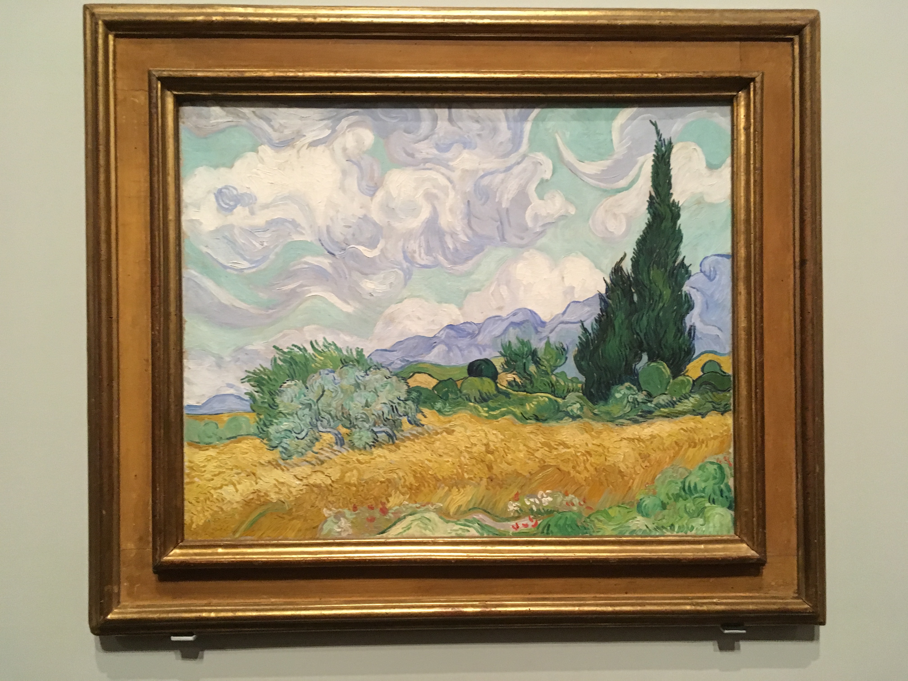
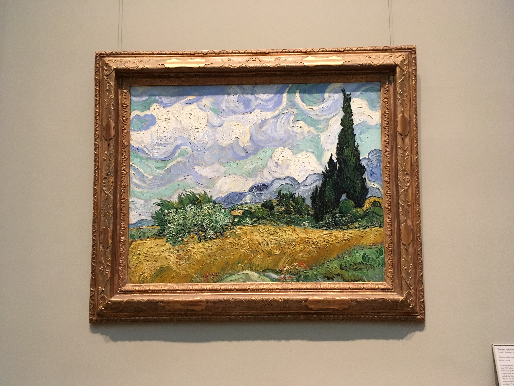

My Artbook
A mobile app for art museum visitors to discover hidden stories, keep wonderful memories, and share happy moments.
01/2018 - 05/2018
Capstone project
(Independent)
Research
Prototyping
UI Design
Usability Testing
Sketch
InVision
Adobe Illustrator
Realtime Board
The Story
I'm a travel enthusiast and I love visiting local museums when I go to a new city. In the summer of 2017, I travelled to 3 different countries and 9 cities. In Xi'an, China, I went to an exhibition where I came across this painting 👇
( Source:Wikipedia )
{kind=link}
Actually, this painting didn't catch my attention until 2 weeks later when I travelled to Melbourne, Australia. There I visited the National Gallery of Victoria where a special exhibition of Van Gogh was held. When I saw this painting, I suddenly realized that I just saw it a few days ago (Let me take a picture!):
So after the travel in Australia ended, I flew back to the US. My airplane landed at JFK and I took the chance to visit the New York city for the first time in my life. Then on the second floor of the Met, I saw this painting hanging there 👇
I met this painting 3 times at DIFFERENT places in ONE MONTH!
How could this happen?!
Well, the answer is that Van Gogh created 3 versions for this painting (I didn't know it until I found this on Wikipedia). And I realized there could be so many hidden stories behind the paintings.
The Challenge
Due to space limitation, only very limited information is provided to art museum visitors directly as they physically visit a museum. Art museum visitors need to spend a considerable amount of time and cognitive energy to search and filter internet information if they want to know more about an artwork.
The Solution

My Artbook is a mobile app that helps art museum visitors to quickly find information of an artwork they would like to know. Besides, art museum visitors can also "favorite" a piece of artwork, create their own art collections, and share an artwork with their families and friends.
Interactive prototype 👇
Try to take a photo of the painting on the wall and find the artwork information. You could also do a manual search, add your notes, and save the artwork to your own collection. If you have some more time, try sharing the first painting in your "favorites" to Instagram.
Research
Literature Review
I conducted a literature review to understand how museum researchers have progressed in providing supplemental information using evolving technologies.
After this research, I narrowed the scope of my project to mobile app design because mobile devices could provide more personalized services for museum visitors.
1-on-1 Interviews
In order to discover how art museum visitors feel about their past experiences in information acquiring and what they do with the information, I conducted semi-structured interviews with 8 participants who had various backgrounds.
Understanding the Data
I interpreted interview data by making affinity diagram using Realtime Board. It helped me to collect useful user expectations and get deaper understanding of the themes of the story.
Scoping
Personas
From the interviews I found that people go to art museums mainly for two reasons: to study, or to relax. Two personas reflecting the two main types of visitors were created.

Insights
Incorporating 7 features in one product is not an easy work. I needed to group similar functions together so as to make the information architecture simple and clear to even first-time users.
The user needs were organized into 4 categories. Then I came up with solutions corresponding to the user needs.
Ideation
Incorporating 7 features in one product is not an easy work. I needed to group similar functions together so as to make the information architecture simple and clear to even first-time users.
The user needs were organized into 4 categories. Then I came up with solutions corresponding to the user needs.
Wireframing
I used Adobe Illustrator to picturize the flows of my proposed solutions. I tried to make each task as simple and short as possible.
Evaluation
I evaluated the usability of my prototype with 10 art museum visitors. Each participant completed 5 tasks on the prototype while thinking aloud. I also used validated questionnaire to measure the overall user experience.
According to the SUS score, the overall experience of the prototype ranks A, which means the design is very user-friendly for first-time users.
The Reflections
This is my first large independent project. If I could start over again, I would do a quick user testing before I start working on the UI design. I am pretty sure the final outcome would be a lot better with this improvement.
By the time of the research part began, there was no similar product in the market. If I had enough time and resources, I really want to make My Artbook a real product. I can tell how useful and helpful it would be in art education and cultural promotion. I can imagine it bringing delightful moments to museum visitors and passing the delight to those people outside the museum's walls.